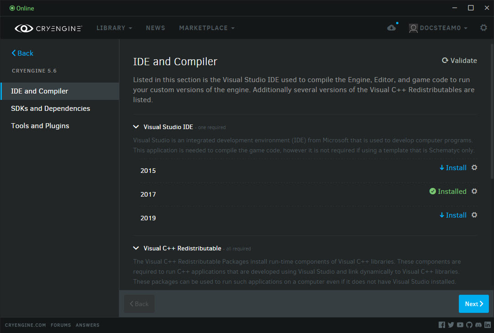
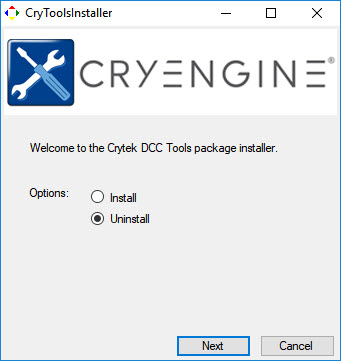
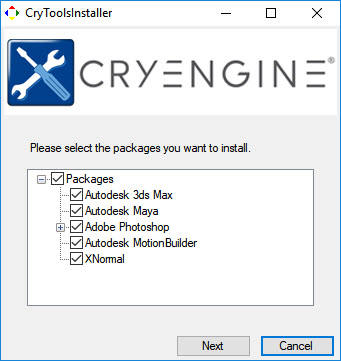
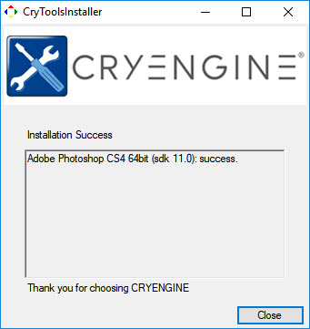

Обзор
CRYENGINE поставляется с приложением-установщиком (CryToolsInstaller), которое упрощает установку плагинов и инструментов, поддерживающих процессы экспорта и создания контента, используемые в различных пакетах создания цифрового контента (DCC). Установка через CryToolsInstaller помогает поддерживать актуальность ваших плагинов для каждой версии движка, поэтому мы рекомендуем этот метод вместо установки вручную.
Доступ к CryToolsInstaller можно получить через программу запуска CRYENGINE во время установки Engine или через пункт меню программы запуска CRYENGINE. Библиотека → Мои движки (развернуть меню) Зависимости → Инструменты и плагины → CryToolsInstaller.
Перед запуском установщика убедитесь, что вы настроили информацию о сборке через
В этой теме
Запуск CryToolsInstaller
В рамках любого процесса установки нового Engine пользователю будет представлена панель панели запуска, показанная ниже. Эта же панель управления также доступна через Библиотека → Мои движки (развернуть меню) Зависимости → Инструменты и плагины → CryToolsInstaller. 
Для запуска приложения нажмите на кнопку Установить кнопку (вы также можете запустить приложение с помощью символа шестеренки (отображается в Проводнике)).
Это откроет приложение. Нажмите кнопку Установить кнопку, затем кнопку Далее кнопка. 
Выбор пакетов для установки
Выберите пакеты плагинов, которые вы хотите установить. Конечно, то, что будет установлено, напрямую связано с теми программными приложениями, которые уже установлены на вашем PC. Инструменты автоматически определяют поддерживаемые версии приложений и место их установки на жестком диске. После того, как вы выбрали пакеты, нажмите кнопку Далее кнопка. 
После этого вы получите «успех» (или «неуспех», если что-то пошло не так) при установке необходимых плагинов. Наконец, нажмите на Закрыть кнопку для завершения установки.
